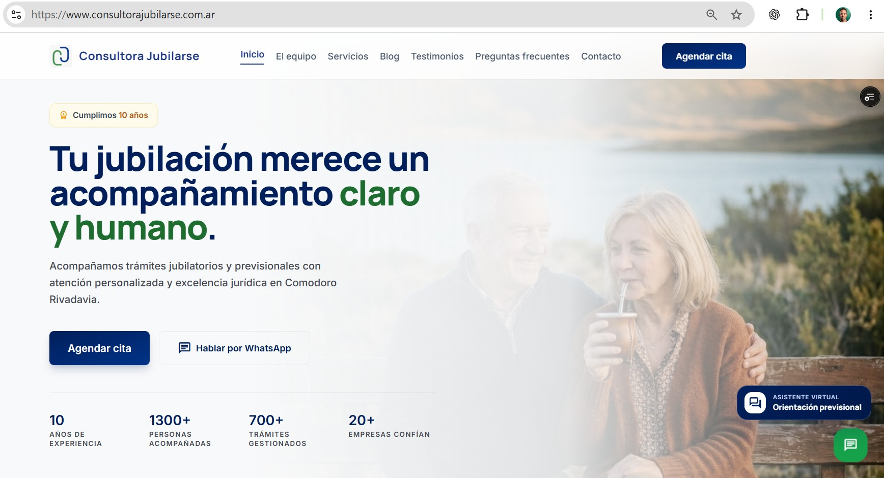
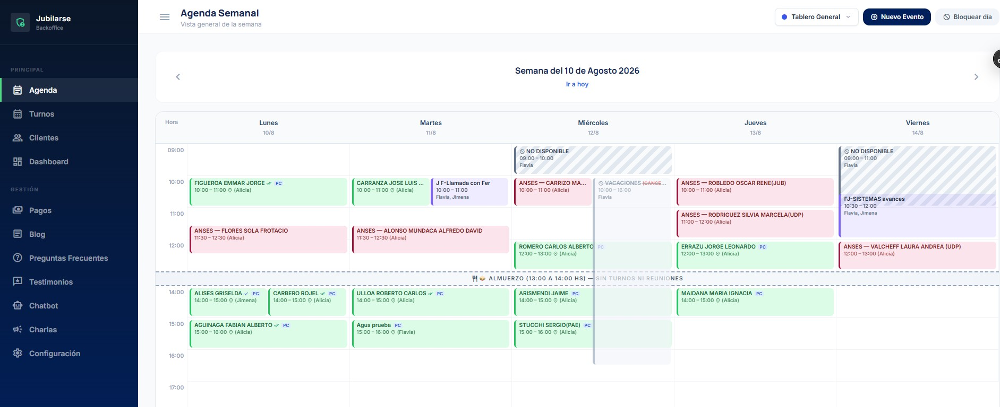
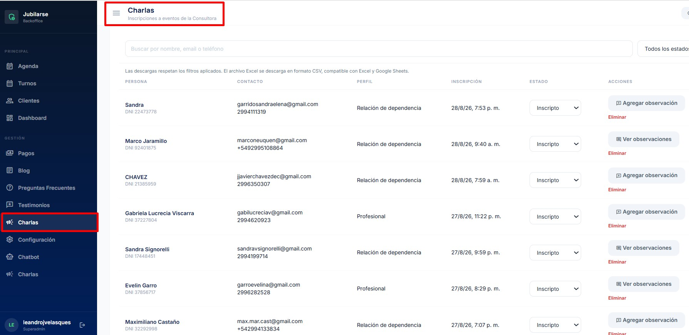
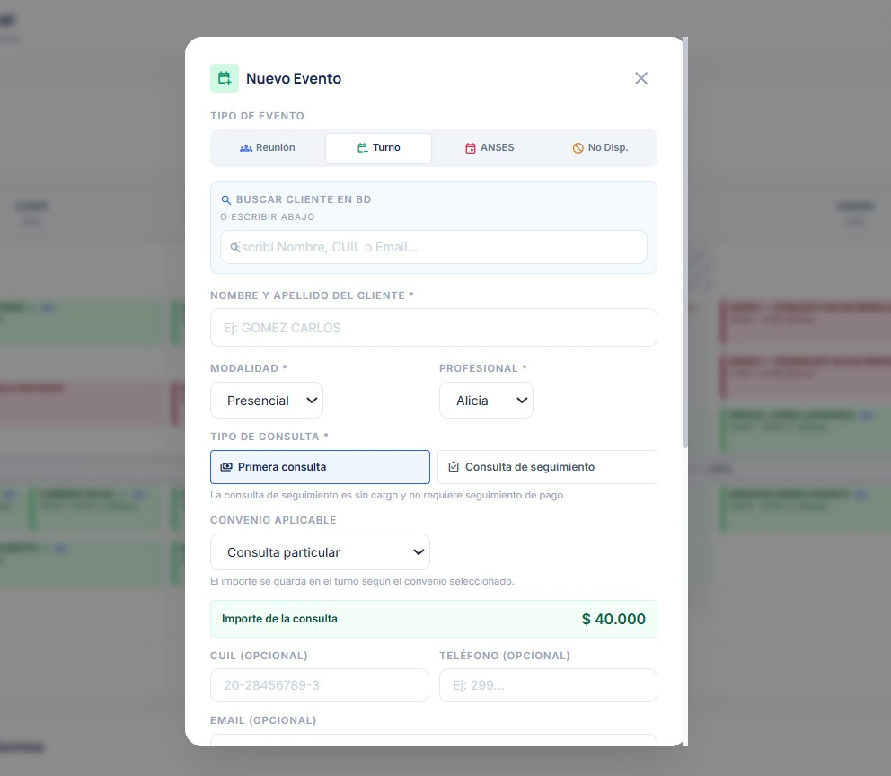

PROYECTO 01 · SITIO WEB + BACK OFFICE
Una experiencia más clara para consultar y gestionar.
Rediseño del sitio y desarrollo de herramientas autoadministrables para acompañar la atención, la agenda y la comunicación cotidiana de la consultora.
- Sitio y secciones autoadministrables.
- Agenda de turnos conectada con el correo.
- Chatbot para gestionar consultas iniciales.
- Novedades para mostrar actividades de la consultora.
- Eventos y charlas con gestión de inscripciones.
- Back office centralizado para actualizar cada sección.




CAPTURA PENDIENTEOtra pantalla del sistemaPlaceholder preparado para sumar una vista interior cuando esté disponible.